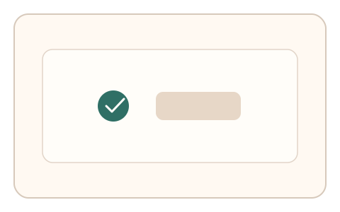
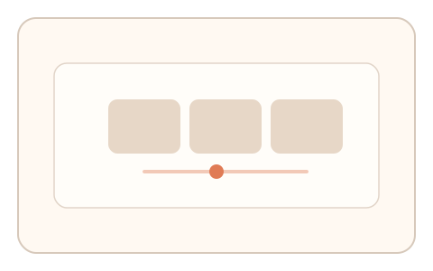

#154
Reverse Brainstorming - Round 1
已扩展
风险分层校验
低风险快速通过，高风险或异常时升级为高维度连续信号任务。
概念原文
将小答案空间任务改为“低风险快速通过”，但在异常行为或高风险场景下自动升级为高维度连续信号任务。
降低正常用户负担，同时让暴力策略成本急剧上升。
研究背景
验证码需要在可用性与安全性间平衡。风险分层可让正常用户快速通过，同时对异常流量提升验证强度。
核心机制
- 先执行低负担小答案空间任务。
- 风险评估触发升级验证。
- 升级任务采集多维连续信号。
- 结合风险级别给出最终判定。
用户流程
- 步骤 1：用户完成快速验证。
- 步骤 2：系统评估风险并决定是否升级。
- 步骤 3：必要时完成高维任务并判定。
判定信号
风险评分与行为异常
高风险场景需要更强信号。
升级任务的连续信号
高维信号更难伪造。
判定逻辑
低风险直接通过；高风险需满足升级任务阈值。
对抗面
- 伪装低风险以规避升级
- 脚本固定通过低负担任务
防御与缓解
- 动态调整风险阈值
- 将部分低风险也随机抽检
- 升级任务参数随机化
可达性与风险
升级任务提供等效替代通道，避免高负担阻断。
- 风险误判导致过度升级
- 升级任务影响体验
可视化状态

状态 1：低风险快速
低负担验证快速通过。

状态 2：风险升级
高风险进入多信号任务。

状态 3：分层判定
根据风险级别输出结果。
参考资料
Risk-based authentication
说明风险分层与动态校验。
Multi-factor authentication
说明多层验证思路。